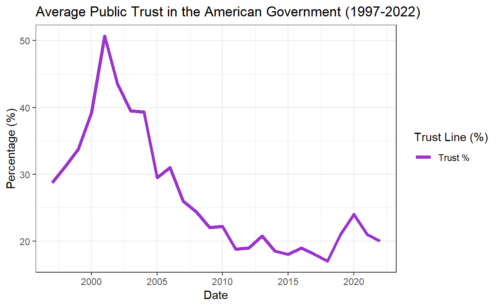

A Study On Modern Trust in American Political Institutions
I am interested in exploring data related to political partisanship. We are presently living in an America where people have vastly different perceptions of the other party, demonizing one side or the other. If I can find some studies on it, I think I can do some solid research and come to good conclusions about the state of American polarization today.
My research question is this:
Does trust in the American media directly correlate to trust in the American government and its institutions?
My belief is that as media has developed over time, from print media to radio to television to our phones, it has paradoxically driven us further apart. As such, my hypothesis is that, as media has developed over the last 25 years, as trust in media has decreased, trust in the American government decreases, and will continue to.
In order to measure this, my explanatory value will be a time-series data set that will observe how Americans’ trust in media has changed over time. For my variable of interest, I want to look at trust indicators observing how Americans trust their government institutions.
I will also be including supplementary data regarding partisan beliefs in both institutions; tracking both Democratic and Republican trust in media and in government.
If the observed pattern demonstrates that individuals who are largely gathering information from very partisan outlets are progressively growing in their distrust of the opposition party or of their key positions. For the sources themselves, it would show their readers/viewers having more distrust for the opposition the farther away from center the source shifts.
If a pattern were to show that media sources shifting their ideology is not correlated with increased rates of distrust of the opposition among their readers/viewers, or if individuals’ usage of more partisan news sources over time does not indicate increased distrust towards the opposition, those indicators would disprove my hypothesis.
Let’s create a hypothesis test to observe if my theory holds up; it will be a two-tailed test to compare the proportions of trust in media and trust in government over the time period.
ùêª0: No significant difference in trends between media trust and government trust.
ùêª1: Significant differences in trends over time.
Let’s look at the data.
I’ve imported four datasets, partytrustmedia, trustwmedia, partytrustgovt, and trustwgovt. The first two datasets are from a Gallup poll conducting historical trends in media over the years 1976 to 2022. I’m going to edit them so that they fit the time-series data I’m looking to create. To create a more cohesive time period, for each dataset, I will be excluding data before 1997 and interpolate for the year 2006 since the data from 2006 was not included within the Gallup data. There are only 3 years included in the data over the period 1972-1997, and any interpolation between these years would likely misrepresent the opinions of the American populace at any given moment during that time period, especially given histroical events that likely fostered distrust in government and the media; as such, I will be excluding all data prior to 1997.
The data on trust in government are obtained from a survey from the Pew Research Center over the years 1958-2024. Multiple observations from a single year are averaged over that year, and I will be placing the same time constraints over the government data sets, from 1997-2022, in order to observe if there was a significant pattern between trust in media and trust in government over the 25-year time period.
Let’s begin by outputting a dataset on the levels of trust over the last 25 years, trustwmedia.
| Date | Trust_Level | Percentage |
|---|---|---|
| 1997 | Great Deal % | 58.0 |
| 1997 | None At All % | 10.0 |
| 1997 | Not Very Much % | 31.0 |
| 1998 | Great Deal % | 55.0 |
| 1998 | None At All % | 9.0 |
| 1998 | Not Very Much % | 35.0 |
| 1999 | Great Deal % | 55.0 |
| 1999 | None At All % | 11.0 |
| 1999 | Not Very Much % | 34.0 |
| 2000 | Great Deal % | 51.0 |
| 2000 | None At All % | 12.0 |
| 2000 | Not Very Much % | 37.0 |
| 2001 | Great Deal % | 53.0 |
| 2001 | None At All % | 14.0 |
| 2001 | Not Very Much % | 33.0 |
| 2002 | Great Deal % | 54.0 |
| 2002 | None At All % | 11.0 |
| 2002 | Not Very Much % | 35.0 |
| 2003 | Great Deal % | 54.0 |
| 2003 | None At All % | 11.0 |
| 2003 | Not Very Much % | 35.0 |
| 2004 | Great Deal % | 44.0 |
| 2004 | None At All % | 16.0 |
| 2004 | Not Very Much % | 39.0 |
| 2005 | Great Deal % | 50.0 |
| 2005 | None At All % | 12.0 |
| 2005 | Not Very Much % | 37.0 |
| 2006 | Great Deal % | 48.5 |
| 2006 | None At All % | 14.5 |
| 2006 | Not Very Much % | 36.0 |
| 2007 | Great Deal % | 47.0 |
| 2007 | None At All % | 17.0 |
| 2007 | Not Very Much % | 35.0 |
| 2008 | Great Deal % | 43.0 |
| 2008 | None At All % | 21.0 |
| 2008 | Not Very Much % | 35.0 |
| 2009 | Great Deal % | 45.0 |
| 2009 | None At All % | 18.0 |
| 2009 | Not Very Much % | 37.0 |
| 2010 | Great Deal % | 43.0 |
| 2010 | None At All % | 21.0 |
| 2010 | Not Very Much % | 36.0 |
| 2011 | Great Deal % | 44.0 |
| 2011 | None At All % | 19.0 |
| 2011 | Not Very Much % | 36.0 |
| 2012 | Great Deal % | 40.0 |
| 2012 | None At All % | 21.0 |
| 2012 | Not Very Much % | 39.0 |
| 2013 | Great Deal % | 44.0 |
| 2013 | None At All % | 22.0 |
| 2013 | Not Very Much % | 33.0 |
| 2014 | Great Deal % | 40.0 |
| 2014 | None At All % | 24.0 |
| 2014 | Not Very Much % | 36.0 |
| 2015 | Great Deal % | 40.0 |
| 2015 | None At All % | 24.0 |
| 2015 | Not Very Much % | 36.0 |
| 2016 | Great Deal % | 32.0 |
| 2016 | None At All % | 27.0 |
| 2016 | Not Very Much % | 41.0 |
| 2017 | Great Deal % | 41.0 |
| 2017 | None At All % | 28.5 |
| 2017 | Not Very Much % | 29.5 |
| 2018 | Great Deal % | 45.0 |
| 2018 | None At All % | 24.0 |
| 2018 | Not Very Much % | 30.0 |
| 2019 | Great Deal % | 41.0 |
| 2019 | None At All % | 28.0 |
| 2019 | Not Very Much % | 30.0 |
| 2020 | Great Deal % | 40.0 |
| 2020 | None At All % | 33.0 |
| 2020 | Not Very Much % | 27.0 |
| 2021 | Great Deal % | 36.0 |
| 2021 | None At All % | 34.0 |
| 2021 | Not Very Much % | 29.0 |
| 2022 | Great Deal % | 34.0 |
| 2022 | None At All % | 38.0 |
| 2022 | Not Very Much % | 28.0 |
Now, I’ve loaded and modified my data as needed, it’s time to create a time-series (or longitudinal) graph that tracks different levels of American trust in the media. I will be doing the same for each of the datasets in this project. Let’s take a look.
This graph points to some very interesting trends, but let’s make some more graphs. We see the level of great deals of trust in the media trending heavily downwards and no trust at all at nearly 40% in 2022. That leads to a pretty clear idea of trust patterns in the American media, but is this being influenced by one party’s trust in the media over the other?
Let’s take a look with our second dataset, partytrustmedia.
| Date | Party Affiliation | Percentage |
|---|---|---|
| 1997 | Republican % | 41.00 |
| 1997 | Democrat % | 64.00 |
| 1998 | Republican % | 52.00 |
| 1998 | Democrat % | 59.00 |
| 1999 | Republican % | 46.00 |
| 1999 | Democrat % | 61.00 |
| 2000 | Republican % | 47.00 |
| 2000 | Democrat % | 53.00 |
| 2001 | Republican % | 39.00 |
| 2001 | Democrat % | 65.00 |
| 2002 | Republican % | 49.00 |
| 2002 | Democrat % | 59.00 |
| 2003 | Republican % | 44.00 |
| 2003 | Democrat % | 66.00 |
| 2004 | Republican % | 31.00 |
| 2004 | Democrat % | 59.00 |
| 2005 | Republican % | 31.00 |
| 2005 | Democrat % | 70.00 |
| 2006 | Republican % | 32.33 |
| 2006 | Democrat % | 68.33 |
| 2007 | Republican % | 33.00 |
| 2007 | Democrat % | 66.00 |
| 2008 | Republican % | 27.00 |
| 2008 | Democrat % | 60.00 |
| 2009 | Republican % | 36.00 |
| 2009 | Democrat % | 58.00 |
| 2010 | Republican % | 32.00 |
| 2010 | Democrat % | 59.00 |
| 2011 | Republican % | 38.00 |
| 2011 | Democrat % | 56.00 |
| 2012 | Republican % | 26.00 |
| 2012 | Democrat % | 58.00 |
| 2013 | Republican % | 33.00 |
| 2013 | Democrat % | 60.00 |
| 2014 | Republican % | 27.00 |
| 2014 | Democrat % | 54.00 |
| 2015 | Republican % | 32.00 |
| 2015 | Democrat % | 55.00 |
| 2016 | Republican % | 14.00 |
| 2016 | Democrat % | 51.00 |
| 2017 | Republican % | 14.00 |
| 2017 | Democrat % | 72.00 |
| 2018 | Republican % | 21.00 |
| 2018 | Democrat % | 76.00 |
| 2019 | Republican % | 15.00 |
| 2019 | Democrat % | 69.00 |
| 2020 | Republican % | 10.00 |
| 2020 | Democrat % | 73.00 |
| 2021 | Republican % | 11.00 |
| 2021 | Democrat % | 68.00 |
| 2022 | Republican % | 14.00 |
| 2022 | Democrat % | 70.00 |
Now we’ll see a time-series plot to follow the data from each party.
This graph demonstrates where the high levels and low levels of trust in the media are coming from; this quantifies for us the source of the distrust, and where we can draw conclusions about modern trust in American media.
Now, let’s look at the trust in government plots, with trustwgovt and partytrustgovt. This should allow us to compare the two datasets.
| Date | Average Trust % |
|---|---|
| 2022 | 20.0000 |
| 2021 | 21.0000 |
| 2020 | 24.0000 |
| 2019 | 21.0000 |
| 2018 | 17.0000 |
| 2017 | 18.0000 |
| 2016 | 19.0000 |
| 2015 | 18.0000 |
| 2014 | 18.5000 |
| 2013 | 20.8000 |
| 2012 | 19.0000 |
| 2011 | 18.8000 |
| 2010 | 22.2000 |
| 2009 | 22.0000 |
| 2008 | 24.3330 |
| 2007 | 26.0000 |
| 2006 | 31.0000 |
| 2005 | 29.5000 |
| 2004 | 39.3000 |
| 2003 | 39.5000 |
| 2002 | 43.5000 |
| 2001 | 50.6670 |
| 2000 | 39.1667 |
| 1999 | 33.7500 |
| 1998 | 31.1111 |
| 1997 | 28.7500 |

Like with the media, let’s take a look at each party’s trust in government more broadly, demonstrated in the following dataset, and the plot which follows.
| Date | Party Affiliation | Percentage |
|---|---|---|
| 2024 | Democrat % | 35.000 |
| 2024 | Republican % | 11.000 |
| 2023 | Democrat % | 25.000 |
| 2023 | Republican % | 8.000 |
| 2022 | Democrat % | 29.000 |
| 2022 | Republican % | 9.000 |
| 2021 | Democrat % | 36.000 |
| 2021 | Republican % | 9.000 |
| 2020 | Democrat % | 15.000 |
| 2020 | Republican % | 32.000 |
| 2019 | Democrat % | 14.000 |
| 2019 | Republican % | 21.000 |
| 2018 | Democrat % | 15.000 |
| 2018 | Republican % | 22.000 |
| 2017 | Democrat % | 15.000 |
| 2017 | Republican % | 28.000 |
| 2016 | Democrat % | 26.000 |
| 2016 | Republican % | 11.000 |
| 2015 | Democrat % | 17.000 |
| 2015 | Republican % | 11.000 |
| 2014 | Democrat % | 32.000 |
| 2014 | Republican % | 16.000 |
| 2013 | Democrat % | 31.800 |
| 2013 | Republican % | 9.800 |
| 2012 | Democrat % | 29.000 |
| 2012 | Republican % | 16.000 |
| 2011 | Democrat % | 23.800 |
| 2011 | Republican % | 13.600 |
| 2010 | Democrat % | 30.667 |
| 2010 | Republican % | 13.444 |
| 2009 | Democrat % | 31.333 |
| 2009 | Republican % | 12.667 |
| 2008 | Democrat % | 25.333 |
| 2008 | Republican % | 24.000 |
| 2007 | Democrat % | 20.000 |
| 2007 | Republican % | 37.000 |
| 2006 | Democrat % | 20.600 |
| 2006 | Republican % | 48.400 |
| 2005 | Democrat % | 20.750 |
| 2005 | Republican % | 44.750 |
| 2004 | Democrat % | 29.500 |
| 2004 | Republican % | 58.000 |
| 2003 | Democrat % | 30.000 |
| 2003 | Republican % | 46.500 |
| 2002 | Democrat % | 38.000 |
| 2002 | Republican % | 54.333 |
| 2001 | Democrat % | 41.000 |
| 2001 | Republican % | 66.000 |
| 2000 | Democrat % | 43.500 |
| 2000 | Republican % | 36.600 |
| 1999 | Democrat % | 37.750 |
| 1999 | Republican % | 28.857 |
| 1998 | Democrat % | 37.125 |
| 1998 | Republican % | 26.375 |
| 1997 | Democrat % | 38.000 |
| 1997 | Republican % | 24.250 |
Now that we have our four datasets and four graphs all laid out, let’s combine our general data (from the Great Deal % statistic from the first graph, and the plotted line from our government trust graph). This will allow us to better analyze our hypothesis test and conduct a regression.
| Date | Media Trust % | Gov’t Trust % |
|---|---|---|
| 1997 | 58 | 28.7500 |
| 1998 | 55 | 31.1111 |
| 1999 | 55 | 33.7500 |
| 2000 | 51 | 39.1667 |
| 2001 | 53 | 50.6670 |
| 2002 | 54 | 43.5000 |
| 2003 | 54 | 39.5000 |
| 2004 | 44 | 39.3000 |
| 2005 | 50 | 29.5000 |
| 2007 | 47 | 26.0000 |
| 2008 | 43 | 24.3330 |
| 2009 | 45 | 22.0000 |
| 2010 | 43 | 22.2000 |
| 2011 | 44 | 18.8000 |
| 2012 | 40 | 19.0000 |
| 2013 | 44 | 20.8000 |
| 2014 | 40 | 18.5000 |
| 2015 | 40 | 18.0000 |
| 2016 | 32 | 19.0000 |
| 2017 | 41 | 18.0000 |
| 2018 | 45 | 17.0000 |
| 2019 | 41 | 21.0000 |
| 2020 | 40 | 24.0000 |
| 2021 | 36 | 21.0000 |
| 2022 | 34 | 20.0000 |
This dataset will be our key going forward, which we will use to conduct a regression and my hypothesis tests. Now that each of our datasets have been laid out, we can proceed to our analysis.
With the graphs on public trust in the media and the breakdown of trust among different political parties now in view, we can begin to analyze the narratives they present. These visuals offer more than just a snapshot of trust levels—they provide insights into long-term trends, shifts in public perception, and the potential impact of external factors such as major political events, social movements, and evolving media landscapes.
By comparing overall trust in the media with the partisan divide, we can identify whether trust levels are universally declining or if the trends are driven primarily by one political group. Additionally, these graphs can help us uncover patterns of alignment or divergence in media trust between parties, shedding light on how political ideology shapes public perception of the media. This analysis is crucial for understanding the broader implications of media trust.
Let’s begin with the time-series graph for the broader public on trust in media, printed here:
First off, the Great Deal % line, in light gray, tells us where observants reported having a “great deal of trust” in the media. As such, the None At All % line and Not very Much % line indicate no trust in the media and difficulty in trusting the media, respectively. There’s a few trends we can analyze here. Beginning at the start of the dataset, in the year 1999, we see over 50% trust in the media, a level that rapidly declines for a decade and a half before hitting a low point at 32% in 2016, the year Donald Trump was first elected to the presidency; this specific data point can be likely attributed to Russian interference in the 2016 election. A similar conclusion can be drawn from the black line here, the line that represents little to no trust in the media at all. Over the timeframe the data shows a steadily increasing percentage of the American populace not trusting the mainstream media. But what’s the case for separate political parties?
By looking at the graph of different political parties’ trust in media, we can see some interesting trends that don’t follow the trends of the US population at large. While trust for Republicans trend down over time, particularly following Donald Trump’s election, Democrats’ trust in the mass media grew quite a bit, especially during Trump’s presidency. However, in the years immediately before and after Trump’s presidency, Democrats showed a stark decrease in trust, particularly during times of perceived political conflict. This trend could be influenced by factors such as perceived media bias or coverage of the Democratic Party’s political issues.
Conversely, Republicans tend to have fluctuating levels of trust, with an evident increase in trust during Republican administrations, especially under George W. Bush, where media outlets were often critical of the Democratic Party. This pattern is closely tied to the framing of political events, as Republican media outlets tend to present news in a more favorable light for their party, which may explain the growing trust among their base during Republican leadership in the Oval Office. This is a clear indicator of the rising role of media in creating polarization. Republicans have framed mass media as “fake news,” alleging mass media to be actively mischaracterizing the actions of Republican governments and covering up alleged fraud of Democratic governments.
Now, let’s take a look at the trust patterns in those governments over the last 25 years across the broader American public and political parties alike.
The graph above, depicting general American trust in government over the years 1997–2022, highlights a clear trend of declining trust. While there is an evident spike in the early 2000s, this is a notable outlier driven by the rally-around-the-flag effect following the September 11, 2001 terrorist attacks. During this period, a surge in national unity and bipartisan support for the George W. Bush administration led to a temporary and significant increase in public trust.
Despite this anomaly, the overall trajectory of trust in government is unmistakably downward. This consistent decline reflects growing disillusionment among the American public, a trend potentially tied to various factors, including political scandals, economic instability, increasing polarization, and perceptions of government inefficacy. To gain deeper insights into this trend, it is essential to examine partisan dynamics.
A closer analysis of how trust in government fluctuates among Democrats, Republicans, and Independents may reveal whether partisan allegiance, political events, or ideological divides play a significant role in shaping this decline; let’s look at the earlier plot once again.
Here, we see trust in government among Republicans and Democrats swings widely over time; this is clearly attributable to presidential terms. From 1997-2001, Bill Clinton was in power and demonstrated more trust from Democrats, then from 2001-2009, Republicans had more trust in government with George W. Bush in power. The same trend follows for the terms of Obama (Democrat, 2009-2017); Trump (Republican, 2017-2021); and Biden (Democrat, 2021-present, but up until 2022 in our dataset).
Ultimately, we’ve been able to come to some conclusions about each graph and what they demonstrate, backing them up with historical evidence for the patterns shown in each of the graphs, showing broadly that trust in media and trust in government decreased broadly over the time frame of 1997-2022. Now, we should conduct a regression to observe whether our data is statistically significant and if we can interpret media trust as an effective predictor for trust in American government.
Let’s conduct our test, using our mediagovtjoined joined dataset from earlier, which combined trustwmedia and trustwgovt.
| (Intercept) | 31.024 |
| (3.069) | |
| Gov’t Trust % | 0.532 |
| (0.109) | |
| Num.Obs. | 25 |
| R2 | 0.508 |
| R2 Adj. | 0.487 |
| AIC | 155.4 |
| BIC | 159.1 |
| Log.Lik. | -74.718 |
| RMSE | 4.81 |
The estimated coefficient is 0.061 with a standard error of 0.108. This indicates that, on average, for every increase of 1% in media trust, there is a .061% increase in trust in government. This positive coefficient suggests a possible, albeit small, association between increasing trust in media and increased trust in government.
It should be noted that there is a shortage of data that observes potential confounding variables across the entire time period from 1997 to 2022, such as the effectiveness of government policies, perceived legitimacy in government, belief in “fake news”, differences in age, and other potential factors. Thus, because this is observational data, and we cannot confirm that confounding variables have been fully addressed, including the variables theorized before, this positive coefficient should not be interpreted causally. It represents an association rather than a direct causal effect.
To determine statistical significance, we must conduct a test for the critical value, which I will be using a t-test for as the most appropriate method. Our critical t-value is determined by the \(\alpha = 0.05\) significance level, which we will use to determine whether to reject the null hypothesis.
| p_value |
|---|
| 0 |
The estimate for our p-value is shown to be approximately zero, which means we will reject the null hypothesis \(\alpha = 0.05\) significance level.
By rejecting the null hypothesis, our analysis provides strong evidence that trust in the media and trust in government are significantly correlated over the observed time period (1997–2022). Specifically, the regression analysis revealed a small positive association between the two variables, suggesting that shifts in public confidence in the media may correspond to changes in confidence in governmental institutions. This finding, while indicative of a statistical relationship, should be interpreted with caution due to the presence of potential confounding variables, such as political polarization, economic factors, and major national events, which were not fully accounted for in this analysis. These findings align with theories that suggest media trust acts as both a barometer and an influencer of public confidence in government. A less trusted media may contribute to a populace that is less informed—or misinformed—about governmental actions, thereby undermining faith in government’s ability to act competently or fairly. Conversely, a government that fails to foster trust in its institutions may leave citizens skeptical of the media that reports on its activities. The interplay between these two forces could further destabilize democratic norms, as public skepticism grows toward both media and government entities; the patterns shown in the graphs in this report have shown a consistent decrease in trust over time. If either variable of trust continues to follow this decrease, judging by the conclusions of this report, trust will continue to be eroded across both institutions. To theorize, America’s trust in the government and media could mean general erosion of trust between people themselves. Ultimately, trust is the cornerstone of a functioning democracy. Rebuilding this trust—both in media and in government—requires a concerted effort to bridge the growing divides in how Americans perceive these institutions and each other. Without this trust, the ability of citizens to engage meaningfully in democratic processes and hold leaders accountable may be fundamentally compromised, and along with it, American institutions.